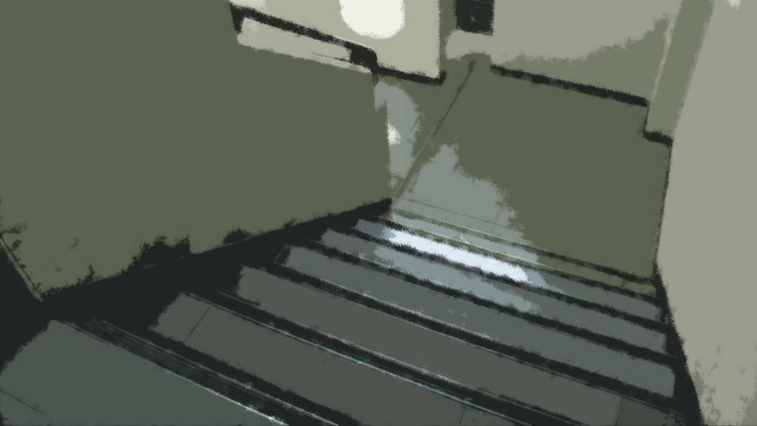

Let's Give Up


"Now then, Senpai."
At last, Goto's smile was completely gone from her face.
Goto, I'd heard, used to have a personality like this.
Natsumi hadn't met her yet back then, and I'd heard she'd been a gloomy girl who didn't trust people much and shut herself up in her shell.
At last, Goto's smile was completely gone from her face.
Goto, I'd heard, used to have a personality like this.
Natsumi hadn't met her yet back then, and I'd heard she'd been a gloomy girl who didn't trust people much and shut herself up in her shell.
"Senpai, if it's hard for you to say, can I bring it up myself?"
Goto had completely forgotten about the pizza.
No, the pizza had never been the point to begin with.
Goto had completely forgotten about the pizza.
No, the pizza had never been the point to begin with.
"Senpai, you don't seem to want to leave Kogori-senpai alone. Are you worried about the Megasawa City case, by any chance?"
"Wha...!"
"Wha...!"

"If so, you must be uneasy, right?
Let's quietly follow Kogori-senpai, starting now. If we can talk while we follow her and keep watch, there's no problem, right?"
It was a pretty good idea, but Goto had already caught on to something.
Her being quick on the uptake was a help, but...
It was a pretty good idea, but Goto had already caught on to something.
Her being quick on the uptake was a help, but...


We followed Natsumi out of the apartment.


"Hmm hmm hmmm."
Natsumi was humming as she waited for the elevator.
Natsumi was humming as she waited for the elevator.
"Senpai, you want to know, don't you? About the case in Central Park.
Kogori-senpai gets scared of cases like this, and yet you called me over, knowing I was looking into it.
You know I'm the type who itches to talk about this kind of thing, right?"
"Yeah..."
"Yeah..."
We waited for Natsumi to get on the elevator, then headed for the stairs.

"Senpai, you know about the Megasawa City case in Iizawa Prefecture, right?"
"Yeah, I know. I lived there until 3 years ago."
I told her honestly. There was no point in hiding it.
"Yeah, I know. I lived there until 3 years ago."
I told her honestly. There was no point in hiding it.
"Huh? Really? Until 3 years ago? I didn't know that."
Come to think of it, I hadn't told Goto that, had I?
But from there, she'd quickly work her way to me being the culprit.
Come to think of it, I hadn't told Goto that, had I?
But from there, she'd quickly work her way to me being the culprit.
When we got down to the first floor, Natsumi was just stepping out of the elevator.
Natsumi didn't notice us and headed for the building's exit.
Natsumi didn't notice us and headed for the building's exit.

"Feeling healthy is wonderful! Maybe I'll take a stroll on the way!"
It looked like she was walking to the convenience store, not biking.
This way, I could also buy time to talk with Goto.
It looked like she was walking to the convenience store, not biking.
This way, I could also buy time to talk with Goto.
"The cases that happened in Megasawa City come up now and then, don't they?
If I remember right, 3 years ago, 6 years ago, 10 years ago. They always happen on April 8.
And this time, it happened here, in Motoki-cho. You were in Megasawa City until 3 years ago, weren't you, Senpai?"
―We sneaked along after Natsumi.

"Goto... Aren't you scared of me?"
"Scared? Of course I'm not! Why would I be scared of you, Senpai? Don't tell me you're going to say that you, Senpai, are the culprit behind today's case and the Megasawa City case?"
"............ What if I said I was?"
"Impossible."
"You answered that right away, huh?"
"Scared? Of course I'm not! Why would I be scared of you, Senpai? Don't tell me you're going to say that you, Senpai, are the culprit behind today's case and the Megasawa City case?"
"............ What if I said I was?"
"Impossible."
"You answered that right away, huh?"
"Oh, and also, I found out by asking around that something similar happened in Central Park on April 8, 12 years ago.
Well, it seems that one was an accident, but for now, let's suppose it's connected to this case and the Megasawa City case."
She already knew even about my dad?
She already knew even about my dad?
"Senpai, how about it? If you're calling yourself the culprit, don't you know why the cases happen on April 8 at intervals like these?"
"They're memorial service years. My dad's third-year, seventh-year, tenth-year memorial services. And today is his thirteenth-year memorial." [TN: Buddhist memorials count the year of death as the first year.]
"They're memorial service years. My dad's third-year, seventh-year, tenth-year memorial services. And today is his thirteenth-year memorial." [TN: Buddhist memorials count the year of death as the first year.]
"Huh? Senpai, your father...
Is that so... I didn't know that..."
"Yeah. I kept it from Natsumi too. He died trying to get back a balloon she'd let fly away."
"Yeah. I kept it from Natsumi too. He died trying to get back a balloon she'd let fly away."
"I see... I can understand why that'd be hard to bring up, but..."
"Get it? The Megasawa City case and this case alike, they've got plenty to do with me."
"I'll go with that for now. It seems like it isn't completely unrelated, anyway. But tenth-year memorials don't normally exist, do they? Is it a sect thing?"
"Get it? The Megasawa City case and this case alike, they've got plenty to do with me."
"I'll go with that for now. It seems like it isn't completely unrelated, anyway. But tenth-year memorials don't normally exist, do they? Is it a sect thing?"
"I don't know about all that. I don't know about other sects, but my family has one."
"Well, Shinto does have something like a tenth-year memorial, called the tenth-year rite."
Just then, Natsumi turned to look back our way.
We hurried to hide behind a utility pole.
"Well, Shinto does have something like a tenth-year memorial, called the tenth-year rite."
Just then, Natsumi turned to look back our way.
We hurried to hide behind a utility pole.

"Just my imagination...?"
With that, Natsumi started walking again.
Before we knew it, we'd closed in so far that we could hear Natsumi talking to herself.
Before we knew it, we'd closed in so far that we could hear Natsumi talking to herself.
"Senpai, you're carrying something all by yourself right now, aren't you? Especially about Kogori-senpai.
What on earth is it that you can't talk about in front of Kogori-senpai?"

We reached the convenience store, and Natsumi went in with a light step.
We waited a little way from the store, and I told her about my past.
My dad, the bullying, the curse, the shinigami.
The whole time, Goto kept rubbing my back.
My dad, the bullying, the curse, the shinigami.
The whole time, Goto kept rubbing my back.
"Senpai... that must have been hard. You couldn't tell Kogori-senpai, couldn't tell your mother, all alone this whole time..."
"You think it's stupid, right? That I cursed people, called up a shinigami, and killed them..."
"I do think the curse and the shinigami are strange, but it's certain that murders connected to them have happened. Which means the one killed this time was someone written on the paper dolls..."
"You think it's stupid, right? That I cursed people, called up a shinigami, and killed them..."
"I do think the curse and the shinigami are strange, but it's certain that murders connected to them have happened. Which means the one killed this time was someone written on the paper dolls..."
So that's it...!
So in this morning's case, Natsumi's dad died...
She'd said he'd been on a business trip since yesterday, but Natsumi hadn't seemed to check for herself that her dad was safe.
So in this morning's case, Natsumi's dad died...
She'd said he'd been on a business trip since yesterday, but Natsumi hadn't seemed to check for herself that her dad was safe.
"I killed Natsumi's dad... Next it'll be Natsumi and her mom too...
Goto, help me...! I don't want to kill anyone else!"
There on a street with people passing by, I was close to tears.
Goto said nothing, rose on her toes, and patted my head.
There on a street with people passing by, I was close to tears.
Goto said nothing, rose on her toes, and patted my head.
"I'll do everything I can, too."
"Goto, you believe what I told you?"
"I believe half of it. But the curse part, I'm sorry, but..."
Well, that was only natural. In Goto's position, I'd have said the same.
"Goto, you believe what I told you?"
"I believe half of it. But the curse part, I'm sorry, but..."
Well, that was only natural. In Goto's position, I'd have said the same.
"But Niimura-senpai. I think protecting Kogori-senpai is going to be very hard.
After all, even though the culprit kills by a fixed rule, they've succeeded every single time.
You could say this is a criminal who's very practiced at it."
I didn't care. I couldn't just stand by and lose the life I'd finally gotten.
If I lost that, I'd be as good as dead.
I didn't care. I couldn't just stand by and lose the life I'd finally gotten.
If I lost that, I'd be as good as dead.
"So...
let's give up."
"Wha...!"
Give up? Give up on what?
Don't tell me she was saying we should give up on saving Natsumi?
"Wha...!"
Give up? Give up on what?
Don't tell me she was saying we should give up on saving Natsumi?
I nearly lunged at Goto over a judgment that cold.
But Goto winked, holding an index finger upright against her lips.
What's that supposed to mean...?
But Goto winked, holding an index finger upright against her lips.
What's that supposed to mean...?
"Heh...
heh..."
"Ah-CHOO!"
Suddenly, Goto let out a huge sneeze.
Suddenly, Goto let out a huge sneeze.
"Senpai, I'm sorry! I got snot all over your clothes, Senpai!"
"Ew...!"
Sticky slime clung to my shoulder.
"Ew...!"
Sticky slime clung to my shoulder.

"Come on, Senpai, let's go home and change!"
With that, Goto winked again.
What's going on? Does she have something in mind?
With that, Goto winked again.
What's going on? Does she have something in mind?
"But Natsumi..."
Then Goto rose on her toes and whispered in my ear.
"It's okay, leave it to me."
Why whisper...?
Could the shinigami already be nearby...?
If Goto's noticed that, I'd like to think she wouldn't say to go home and leave Natsumi behind, but...
"It's okay, leave it to me."
Why whisper...?
Could the shinigami already be nearby...?
If Goto's noticed that, I'd like to think she wouldn't say to go home and leave Natsumi behind, but...
I did as I was told and went back the way we'd come.
"Ah, Senpai, look out!"
Suddenly Goto shoved me.
"Ah, Senpai, look out!"
Suddenly Goto shoved me.
"Ugh! This is..."
I'd stepped right in some dog poop.
I'd stepped right in some dog poop.
"Oopsie... I'm sorry... Looks like some luck's stuck to you..." [TN: Pun: 'un' means both luck and poop.]
No, no, she totally made me step in it on purpose...!
Now I couldn't wear these again until I'd given them a good wash...!
No, no, she totally made me step in it on purpose...!
Now I couldn't wear these again until I'd given them a good wash...!

Back home, I changed my clothes.
Goto―what on earth is she thinking?
Going out of her way to make me change clothes, flatly declaring we'd give up...
Goto―what on earth is she thinking?
Going out of her way to make me change clothes, flatly declaring we'd give up...
Then, the sound of the front door opening.
"I'm back!"
It looked like she'd made it without the shinigami getting her.
"I'm back!"
It looked like she'd made it without the shinigami getting her.

"Natsumi, welcome back."
"For now, I just picked out some snacks and DVDs."
"For now, I just picked out some snacks and DVDs."
"Ooh! Thanks for your hard work, sir, Kogori-senpai! Come on, come on, have a seat on the sofa, have a seat!"
Goto had gone into her usual troublemaker mode.
Goto pulled Natsumi's jacket off her by force and sat her down on the sofa.
Goto pulled Natsumi's jacket off her by force and sat her down on the sofa.
Next she started doing something on the living-room computer.

"Hey, Goto, what are you doing...?"

"The DVDs you brought were all on a streaming site I'm signed up for! I'll set it up so we can watch them all in one go, nonstop, on my account!"
"Nonstop?"
"Nonstop?"
Even after the talk we'd had, Goto was doing nothing but things that made no sense.
Still, Goto's wink kept nagging at me.
That must have meant "Follow Goto's lead".
Was this really necessary to save Natsumi?
Still, Goto's wink kept nagging at me.
That must have meant "Follow Goto's lead".
Was this really necessary to save Natsumi?
"Setup's done! Next, it's got to be tea, right?"
Now she went dashing off to the kitchen.
"Goto, I bought drinks, though..."
"While we're at it, a hot drink would be better!"
"While we're at it, a hot drink would be better!"

Goto put the kettle on the stove, then took a scale out of the cupboard.
A scale? What on earth for...?
A scale? What on earth for...?
"Sorry for the wait!"
Tea for three was set out, and the snacks were spread open.
Goto sat down between the two of us,
Tea for three was set out, and the snacks were spread open.
Goto sat down between the two of us,
"Oh, Senpais, let me explain my rule!"
"Rule?"
"While I'm watching movies and stuff, I don't want any talking at all. So, Senpais, please don't make a sound. There are five movies' worth in all, though!"
"Huh?"
"Huh?"
She was telling us not to talk for 10 hours, starting now?
Natsumi looked fed up too.
"Huh?"
"Huh?"
She was telling us not to talk for 10 hours, starting now?
Natsumi looked fed up too.

―The movie started.
Then Goto turned the volume up.
Wasn't that a bit too loud, by any standard?
Then Goto whispered in my ear.
Then Goto turned the volume up.
Wasn't that a bit too loud, by any standard?
Then Goto whispered in my ear.
"In a bit, the three of us will slowly slip out of the room. That way Kogori-senpai will be saved, and we can catch the shinigami too.
At last: Operation start!"
By now, Goto's words had gone beyond anything I could understand.
By now, Goto's words had gone beyond anything I could understand.
―5 minutes later, Goto gave the signal.
Goto seemed to whisper something to Natsumi too, but Natsumi stood up looking puzzled.
Leaving the movie running, we tiptoed out of the room.
Goto seemed to whisper something to Natsumi too, but Natsumi stood up looking puzzled.
Leaving the movie running, we tiptoed out of the room.
Read ✓ Next in this arc →